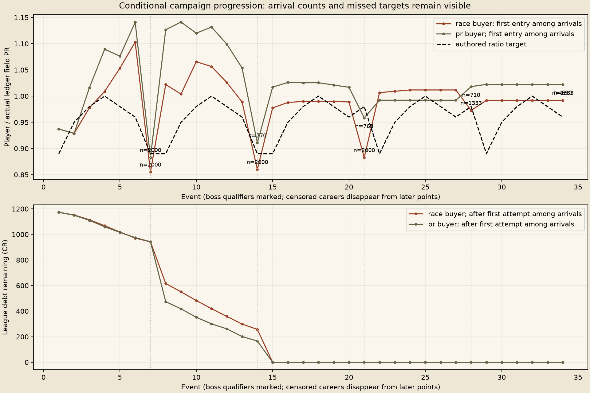

Fresh physical outcomes, conditional ledger resampling, no human feel verdict. Failed targets and censored careers remain results.


Race buyer uses two training seeds to pick each chassis; PR buyer is the control. Both resample the other two regular-event seeds and eighteen held-out boss seeds. The 70-race observation limit censors unfinished careers.
| Buyer | Decisions | Reward | N | Completed | Censored | Bankrupt | Finale arrived |
|---|---|---|---|---|---|---|---|
| race | Rookie | money | 223 | 0 | 223 | 0 | 0 |
| race | Rookie | car | 222 | 0 | 222 | 0 | 0 |
| race | Rookie | part | 222 | 0 | 222 | 0 | 0 |
| race | Club | money | 223 | 222 | 1 | 0 | 223 |
| race | Club | car | 222 | 221 | 1 | 0 | 222 |
| race | Club | part | 222 | 222 | 0 | 0 | 222 |
| race | Pro | money | 222 | 222 | 0 | 0 | 222 |
| race | Pro | car | 222 | 222 | 0 | 0 | 222 |
| race | Pro | part | 222 | 222 | 0 | 0 | 222 |
| pr | Rookie | money | 223 | 0 | 223 | 0 | 0 |
| pr | Rookie | car | 222 | 0 | 222 | 0 | 0 |
| pr | Rookie | part | 222 | 0 | 222 | 0 | 0 |
| pr | Club | money | 223 | 10 | 213 | 0 | 12 |
| pr | Club | car | 222 | 19 | 203 | 0 | 20 |
| pr | Club | part | 222 | 10 | 212 | 0 | 11 |
| pr | Pro | money | 222 | 211 | 11 | 0 | 219 |
| pr | Pro | car | 222 | 190 | 32 | 0 | 209 |
| pr | Pro | part | 222 | 204 | 18 | 0 | 213 |
Full measured summary and caveats. Gzip CSV files retain raw outcomes and source hashes.